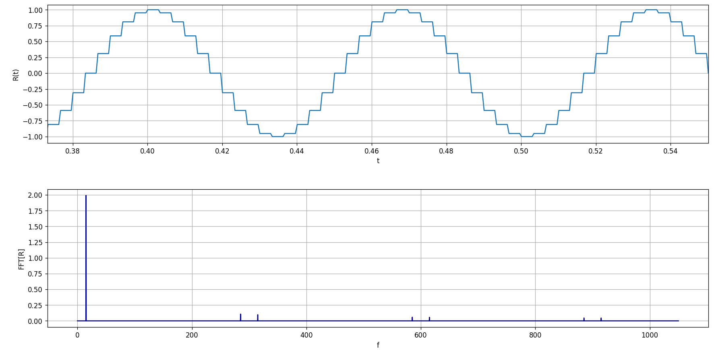
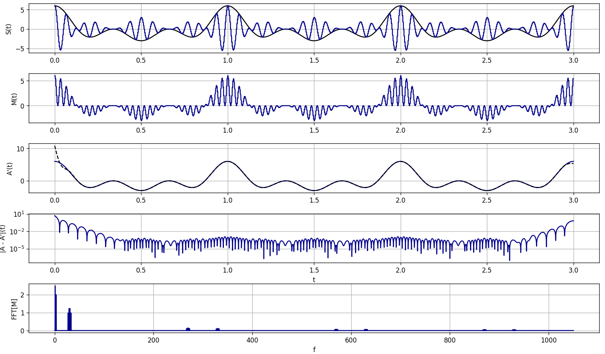

Journal Week 30
Table of Contents
Referencias
2026-07-20
[12:30]
Estuve probando el sensor que armé la semana pasada con uno de los nuevos cables. Para esto instalé el software de la placa en la computadora con Windows 11 (con todos los mismos intaladores y versión de Python 3.8.8 como en Windows 7 y 10).
Pareciera funcionar, por el graficador en tiempo real, correctamente. Lo que sí lo probé con un generador AFG 1022 (10 Vpp y 57.250 kHz) y sin esmaltar la punta, pero a priori parecía sin el transitorio lento y muy suave.
2026-07-23
[10:37]
El código de Claude para la DAC de la PS3K funciona bien para generar sinoidales. Las cuestiones son las siguientes,
- El límite entre punto y punto es de 10 \(\mu s\), aunque para mí debería haber algo como el
daqh.DafSettle1usdel ADC para cambiar eso. - El intervalo entre punto y punto es escalonado, en lugar de una interpolación suave.
[10:55]
Al parecer Claude había hardcodeado el límite de 10 \(\mu s\), sí se puede con 1 \(\mu s\) o tal vez incluso un poco menos ya que el dispositivo reporta como frecuencia límite 1.2 MHz. Queda la cuestión de la interpolación.
[11:17]
Con un filtro pasabajos de 3 k\(\Omega\) y 560 pF se suaviza un montón.
[12:12]
Ya ChatGPT armó una interfaz gráfica que funciona bastante bien con tkinter.
[15:26]
Penándolo ahora un lockin digital debería funcionar si la señal tiene componentes espectales en frecuencias más altas que la principal, ya que después igualmente se aplica un filtro pasabajos que saca los efectos de la convoloción de la señal moduladaa con las otras frecuencias.

